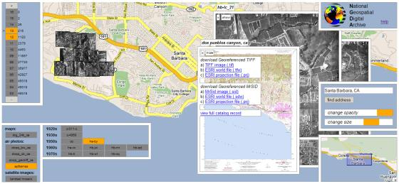

1Map and Imagery Laboratory, Davidson
Library, University of California at Santa Barbara, Santa Barbara, CA
93106-9010.
2Institute for Computational Earth System Science,
University of California at Santa Barbara, Santa Barbara, CA
93106-3060.
We present a prototype visual browser for georeferenced digital libraries that allows a library to be navigated, and library content to be discovered, without explicitly formulating queries. The browser also provides a seamless transition from a synoptic view of library content to examination of individual library items.
A georeferenced digital library organizes information of all stripes, from raw data to textual documents, into collections of discrete items, each of which has a geographic region of relevance or footprint. Among the geosciences there are copious amounts of data that are georeferenced, and it has been estimated that over 70% of all textual documents contain relevant georeferences [1]. The principal goal of a georefenced digital library is to take advantage of this metadata, and to take advantage of the near-universal reference frames provided by cartographic coordinate systems and geographic placenames, in order to provide spatial search and navigation services and to reveal spatial context and relationships.
The dominant paradigm in information retrieval systems is the query-result cycle: the user first formulates a query; submits the query and waits for results to appear (usually in the form of a linear list); examines the results (often limited to examining one at a time); and perhaps refines the query, thus repeating the cycle. The retrieval mechanisms offered by georeferenced digital libraries (including the Alexandria Digital Library (ADL), Geospatial One-Stop, and the Geography Network) as well as geographically-enhanced Web search systems (including Google Local, Yahoo! Local, and MSN) all follow this model. These systems typically provide contextual base maps to support the query formulation phase, but support for visualizing query results is limited, if present at all. Also largely missing is the ability to see spatial relationships among query results and library content as a whole. ADL provides some synoptic graphics [2], but these are static and not integrated with the search system.
To address these limitations, we have developed a visual browser for georeferenced digital libraries that eliminates the query/result cycle. Instead, the browser displays reduced-resolution versions (i.e., thumbnails and iconic representations) of all items in the digital library over a base map. Map pan and zoom controls provide the means of navigating the library. A screen capture of the browser is shown in the figure below.

Figure 1. Screen capture. Click on the image to view full size.
Of course, displaying all items immediately begs the question of how to display the items in a visually coherent fashion, especially when large numbers of items overlap and even coincide in geographic space. After analyzing and categorizing the types of overlaps encountered in digital library collections [3], we developed a suite of de-cluttering mechanisms:
Our prototype browser is implemented using the Google Maps API, and is built on top of the ADL middleware server [4]. To support the rapid response times needed for visual browsing, an automated preprocessing step, built on top of core ADL library services, computes and caches certain display-related information such as clusters and zoom level histograms. A demo version of the browser operating over selected UCSB collections is available at http://clients.alexandria.ucsb.edu/ngda/.
Future development includes integration with other (non-geographic) query criteria; refinement of the aforementioned clutter reducing mechanisms; reimplementation using the Google Web Toolkit; and integration on top of the National Geospatial Digital Archive (NGDA), the funding project for this work.
[1] Linda L. Hill. Georeferencing: The Geographic Associations of Information. (Cambridge, Massachusetts: MIT Press, 2006).
[2] Linda L. Hill, Greg Janée, Ron Dolin, James Frew, and Mary Larsgaard. Collection Metadata Solutions for Digital Library Applications. Journal of the American Society for Information Science (JASIS) 50(13) (November 1999): 1169-1181.
[3] Greg Janée. Spatial Footprint Visualization. January 24, 2006.
[4] Greg Janée and James Frew. The ADEPT Digital Library Architecture. Proceedings of the Second ACM/IEEE-CS Joint Conference on Digital Libraries (JCDL) (Portland, Oregon; July 14-18, 2002): 342-350.
{kind=link}